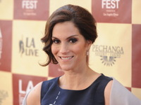
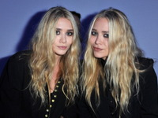

SHOWBIZ
Të gjitha lajmet rreth showbiz-it vetëm tek ne!

Të gjitha lajmet rreth showbiz-it vetëm tek ne!
BALLINA | DERGO LAJM | NA KONTAKTO | RRETH NESH | REKLAMONI ME NE | FAKTE | TJERA | ERRËT | NORMAL
| Emri dhe mbiemri | Pasuria | |
|---|---|---|
| 1.Oprah Winfrey | $3,500,000,000 | |
| 2.Jamie Gertz |  | $3,500,000,000 |
| 3.Jacqueline Gold | $860,000,000 | |
| 4.Shahrukh Khan | $600,000,000 | |
| 5.Simon Cowell | $600,000,000 | |
| 6.Tom Cruise | $600,000,000 | |
| 7.George Clooney | $500,000,000 | |
| 8.Robert De Niro | $500,000,000 | |
| 9.The Olsen Twins |  | $500,000,000 |
| 10.Dr Phil |  |
$460,000,000 |
Disa thonë, Bill Murray humbi role të shkëlqyera për shkak të mungesës së një agjenti, por është vogëlsira si kjo që e bën Murray të qëndrojë njëqind milje përpara aktorëve të tjerë në kampionatin e tij. Jo, nuk do ta gjeni këtë numër në Internet. Ne u përpoqëm.
Zgjedhja e parë e regjisorit Gore Verbinksi për të luajtur një pirat legjendar ishte Jim Carrey. Fatkeqësisht për Carrey, orari i prodhimit të The Curse of The Black Pearl bashkë-përfshiu me xhirimet e Bruce Almighty.
Ky lajm së pari doli në dritë kur Matthew McConaughey po qëllonte për Fool's Gold me Kate Hudson e cila iu lut McConaughey të përdorte një deodorant gjatë xhirimit, ku ai ishte pa këmishë për pjesën më të madhe. Si adhuruesit e tij, ne vendosim të përqafojmë mohimin me këtë informacion të qelbur.
Aktorja Lana Turner e cila po qëllonte me Sean Connery kur i dashuri i saj Johnny Stompanato hyri në skenat e filmit për të kërcënuar Sean Connery me armë.Aktori i përkuli krahun Stompanato duke e bërë atë të hidhte armën.